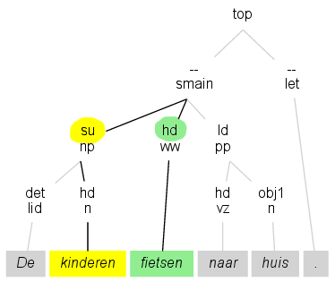
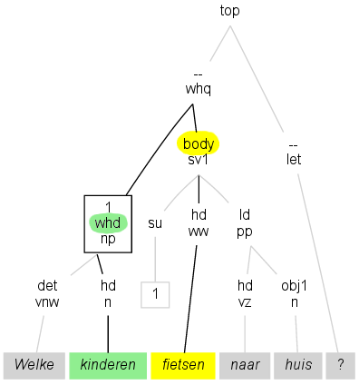
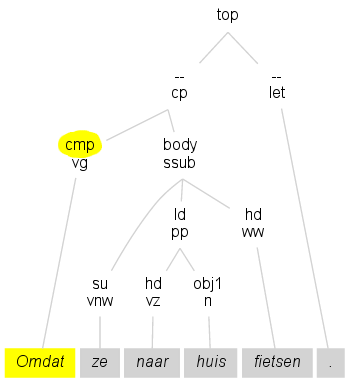

Inleiding
Met PaQu kun je zoeken in syntactisch geannoteerde Nederlandstalige corpora. PaQu ondersteunt twee manieren van zoeken. Met de eerste, eenvoudige, manier kun je naar woordparen zoeken, met daarbij eventueel hun syntactische relatie. De tweede, ingewikkeldere, manier gebruikt de zoektaal XPath.In PaQu is een aantal syntactisch geannoteerde corpora standaard beschikbaar. Maar het is ook mogelijk om je eigen teksten aan te bieden. Deze teksten worden dan door de automatische ontleder geanalyseerd, en opgeslagen. Vervolgens kun je dan op dezelfde manier in je eigen teksten zoeken, dus zowel zoeken naar woordparen als zoeken met XPath.
Om eigen teksten aan PaQu aan te kunnen bieden, en om in die eigen teksten te kunnen zoeken moet je ingelogd zijn. Vervolgens kun je via de tab Corpora je eigen teksten beheren. Je hebt daarbij de keus om je teksten ook voor andere gebruikers doorzoekbaar te maken.
De syntactische annotatie die PaQu ondersteunt volgt de richtlijnen die in het Lassy-project zijn gebruikt om de treebanks van Lassy te maken. Er zijn twee van die treebanks. In Lassy Klein (1 miljoen woorden) is voor elke zin de syntactische ontleding handmatig gecheckt. In Lassy Groot (700 miljoen woorden) is de syntactische ontleding automatisch toegevoegd door de automatische parser Alpino. Beide treebanks worden door PaQu ondersteund.
Nadere informatie
De preciese uitleg voor de syntactische annotatie is beschikbaar in de het document Lassy Syntactische Annotatie (pdf).De annotatie van woordsoorten en lemma's is beschikbaar in het document Part of speech tagging en lemmatisering van het D-coi corpus (pdf).
Achtergrondinformatie is beschikbaar over Lassy en Alpino.
De Lassy treebanks zijn te verkrijgen via de TST Centrale:
Over PaQu
PaQu is ontwikkeld door Peter Kleiweg en Gertjan van Noord, met financiële steun van clarin-nl en clariah. De woordparen-zoekinterface is gebaseerd op een eerdere versie die door Erik Tjong Kim Sang is gemaakt. De XPath-zoekinterface is gebaseerd op de Dact software die door Daniël de Kok en collega's is gemaakt. De automatische syntactische annotatie gebruikt de Alpino parser. De Lassy corpora zijn ontwikkeld in het Stevin Lassy project.

|
De broncode van PaQu is beschikbaar op github.
Zoeken naar woordparen
In de toepassing kun je zoeken naar woord-paren en hun syntactische relatie (zoals onderwerp, lijdend voorwerp, bepaling). In welke zinnen komt het woord film voor als lijdend voorwerp van het werkwoord zien? In welke zinnen komen de woorden Nederland en België voor als conjuncten in een coordinatie? In welke zinnen komt het woord geen voor als determiner bij het woord geld?Voor elke zoekvraag kun je dus twee woorden specificeren, en eventueel de gezochte syntactische relatie. Je kunt van elk woord ook de woordsoort (werkwoord, bijvoeglijk naamwoord, zelfstandig naamwoord) nader beperken. Omdat je elk van de vijf velden ook oningevuld kunt laten, kun je ook vragen als de volgende formuleren: In welke zinnen komt een lijdend voorwerp bij het werkwoord eten voor? In welke zinnen komt een onderwerp bij het werkwoord beslissen voor? In welke zinnen komt een bijwoord voor als bepaling bij een werkwoord?
Op de bladzijde met de gevonden zinnen kun je per zin de preciese syntactische structuur bekijken door op de boom-link ✤ te klikken. Je kunt op de knoppen voor tellingen klikken om de informatie van alle gevonden zinnen en woord-paren te zien te krijgen.
Soorten relaties
Relaties met gewoon hoofd
 Een relatie zoals "su" bestaat tussen een hoofd en zijn onderwerp. De relatie geldt in het plaatje bijvoorbeeld tussen fietsen en kinderen.Voorbeeld 1: Je kunt deze relatie gebruiken om te zoeken naar alle zelfstandig naamwoorden (n) die als lijdend voorwerp (obj1) bij eten voorkomen.
Voorbeeld 2:
Zoek naar alle werkwoorden (ww) waarbij graag als
modifier (mod) optreedt.
- app
- hoofd met een appositie, zoals in
premier Kok
Piet, een aardige man - det
- de determinator bij een hoofd, zoals in
het boek
- hdf
- Voor een hoofd met een postpositie, zoals in
Tot nu toe
- ld
- Voor een hoofd met een locatief/directioneel complement
Hij fietste naar Zweden.
Hij rende het bos in. - me
- Voor een hoofd met een maat-complement, zoals in
Dat duurde drie uur.
De aardappelen wegen twee kilo. - mod
- Voor een hoofd met een modifier, zoals in
Een aardige jongen.
Hij kwam om half zes. - obcomp
- Voor de relatie van een hoofd met een comparatief-complement, zoals in
harder dan ooit
- obj1
- Voor de relatie van een hoofd met een direct object, zoals in
Hij sloeg zijn kinderen
In april - obj2
- Voor de relatie tussen een hoofd en een indirect object, zoals in
Hij gaf de leerlingen een kadootje.
- pc
- Voor een hoofd met een voorzetselvoorwerp, zoals in
Hij rekent op zijn flexibiliteit.
- pobj1
- Voor de relatie tussen een hoofd en het voorlopige lijdend voorwerp, zoals in
Hij betreurt het dat je komt
Hij is er trots op dat je komt - predc
- Voor de relatie tussen een hoofd en een predicatief complement (het naamwoordelijk deel van het gezegde), zoals in
Hij is de baas
Ik vond hem irritant - predm
- Voor de relatie tussen een hoofd en een predicatieve modifier (dubbelverbonden bepaling, bepaling van gesteldheid),
Hij kwam dronken thuis
Hij verft de kozijnen geel - se
- Voor de relatie van een hoofd met een reflexief, zoals in
Hij bevindt zich in een grot
- su
- Voor de relatie tussen een hoofd en het onderwerp
Ik besta.
- sup
- Voor de relatie tussen een hoofd en het voorlopige onderwerp
Het is een feit dat hij niet kwam.
- svp
- Voor de relatie tussen een hoofd en een scheidbaar deel van het werkwoord of een deel van een idioom:
Hij belde me op
Het gaat het voor de wind - vc
- Voor de relatie tussen een hoofd en een verbaal complement
Ik verwacht dat hij komt
Ik hoopte hem te ontmoeten
Ik wil hem niet langer de hand boven het hoofd houden
Andere relaties
 In de syntactische annotatie zijn er ook andere relaties dan relaties tussen hoofden en complementen en bepalingen. Voorbeelden van deze relaties zijn onder andere de relatie tussen een voegwoord en de rompzin, of de relatie tussen een vraagwoordgroep en de rompzin.De relatie body/whd bestaat in het plaatje tussen het woord fietsen en kinderen, omdat fietsen het hoofd is van de rompzin (body) die hoort bij de vraagwoordgroep (whd) waarvan kinderen het hoofd is.
Voorbeeld:
Deze relaties kun
je gebruiken om te zoeken naar alle zelfstandig naamwoorden
(n) die in de relatie
cnj/cnj met suiker voorkomen.
- body/cmp
- rompzin met voegwoord, zoals in
omdat hij geen zin had
- body/rhd
- voor relatieve bijzinnen: de rompzin en het relatieve deel, zoals in
die in Amsterdam woont
- body/whd
- voor vraagzinnen: de rompzin en het hoofd van de woordgroep
die bevraagd wordt, zoals in
wie heb je daar ontmoet
- cnj/cnj
- voor conjuncten die samen in een conjunctie voorkomen, zoals in
appels en peren
- cnj/crd
- voor de relatie tussen een conjunct en de coordinator in een conjunctie, zoals in
appels en peren
appels en peren - crd/cnj
- idem
- crd/crd
- voor de relatie tussen twee coordinatoren in een conjunctie, zoals
zowel Jan als Piet
- mod/cmp
- Voor een modifier bij een ingebedde bijzin, zoals in
Vooral omdat hij te laat arriveerde.
- nucl/dlink
- Voor de relatie tussen de coordinator en de rompzin in een zin die met een coordinator begint, zoals in
En dat is wel hard nodig.
- obj1/su
- Voor de relatie tussen een lijdend voorwerp en een onderwerp
Hij sloeg zijn kinderen
- obj2/su
- Voor de relatie tussen een indirect object en het onderwerp, zoals in
Hij gaf de leerlingen een kadootje.
- su/obj1
- zie boven
- su/obj2
- zie boven
Enkelzijdige relaties
 Sommige woorden zijn zelf niet het complement of de bepaling bij een ander woord. In het plaatje is Omdat geen afhankelijk element, want er is geen ander woord waar Omdat een bepaling of complement bij is. In zulke gevallen zou je kunnen zeggen dat Omdat afhankelijk is van de "top"-knoop.Om zulke woorden in de interface te kunnen vinden, worden de (pseudo)-relaties cmp/-, dlink/-, hd/-, etc gebruikt.
Voorbeeld:
Op deze manier kun je zoeken naar werkwoorden die als
hoofd van de hele uiting optreden, door naar de relatie 'hd/-' en postag 'ww'
te zoeken.
- cmp/-
- voor voegwoorden die het hoofd van de zin zijn, zoals in
Omdat ik geen zin heb.
- dlink/-
- Voor zinnen die met een coordinator beginnen, zoals in
En ik kom niet!
Maar hij luisterde niet... - dp/-
- Voor delen van de zin die geen syntactische relatie met de rest van de zin hebben, zoals in
Vanochtend veel zon
- hd/-
- Voor het hoofd van de zin, zoals in:
Hij vertrekt.
Een stap die veel ophef veroorzaakt. - nucl/-
- Voor een nucleus die als hoofd van de zin fugeert, zoals in
Stromingen: twee types kun je onderscheiden
- sat/-
- Voor een sateliet die als hoofd van een zin fungeert, zoals in:
Het antwoord ligt voor de hand: luiheid.
- tag/-
- Een tag die als hoofd van de zin voorkomt, zoals:
1. Voeten vegen.
Kok: We overleggen nog.
Zoeken naar woorden en lemma's
Zoek naar het woord was, inclusief vervoegingen en varianten in collocatie (hoofdletters/kleine letters, met/zonder accenten):Zoeken met XPath
Voorbeelden, zie: Dact Cookbook
Corpora
Als je bent ingelogd kun je onder de tab Corpora je eigen corpora toevoegen. Je kunt een enkele tekst uploaden, of een zip- of tar-bestand met daarin meerdere teksten. Die meerdere teksten moeten dan wel allemaal in hetzelfde formaat zijn.Platte tekst
Gewoonlijk moet de tekst die je uploadt platte tekst zijn. Geen Word-document, geen PDF, geen HTML, etc. Veel van zulk soort teksten kun je online laten omzetten in platte tekst.De tekst moet bij voorkeur gecodeerd zijn in tekenset UTF-8. Andere tekensets die herkend worden zijn US-ASCII, UTF-16 (met of zonder BOM) en UTF-32 (met of zonder BOM). Wanneer geen van deze tekensets herkend wordt gaat PaQu ervan uit dat de tekenset Windows-1252 is (of ISO-8859-1, een subset van Windows-1252). Alle tekst moet in dezelfde tekenset gecodeerd zijn.
Wat PaQu met de tekst doet hangt ervan af hoe het er uitziet. Is het doorlopende tekst (eventueel ingedeeld in paragrafen gescheiden door een lege regel), of bestaat de tekst al uit één zin per regel? In het eerste geval zal PaQu de tekst voor je in zinnen opdelen, tokeniseren, en voorzien van een label voor elke zin.
Is de tekst al opgedeeld in één zin per regel, dan kijkt PaQu of de tekst al getokeniseerd wordt. Zo niet, dan wordt dat alsnog gedaan. Als er nog geen labels aanwezig zijn, dan voegt PaQu die toe. Tekst die al getokeniseerd is mag codes bevatten die als instructie voor de parser dienen, zie onder Tips and tricks in de Manual for syntactic annotators.
PaQu probeert automatisch te bepalen hoe de tekst is ingedeeld. Dat gaat niet altijd goed. Daarom kun je voordat je de tekst uploadt onder Soort document zelf aangeven wat het juiste formaat is.
Metadata
Je kunt tussen de tekst metadata opnemen, extra gegevens die gekoppeld worden aan de zinnen, en die je kunt gebruiken bij het zoeken als de tekst eenmaal door PaQu verwerkt is.Hier is een voorbeeld van invoertekst met metadata:
##META text genre = naturalisme
##META int hoofdstuk = 1
##META int paragraaf = 1
De geschiedenis van een vrouw. Hoe zij zocht de koele meren des Doods, waar verlossing is, en hoe zij die vond.
##META int paragraaf = 2
Haar naam heet ik Hedwig Marga de Fontayne. Een Hollandsche vrouw, maar met bloed in zich van uitheemsche voorouders.
##META int paragraaf = 3
Zij was in 't midden der negentiende eeuw geboren en opgegroeid in een Hollandsche provincie-stad, aldaar was klein vertier van handel of bedrijf, maar toch welvaart, want er woonden veel rijken in deftige huizen.
Alle metadata die je definieert in een blok geldt voor de rest van het bestand, of tot aan een volgend blok waar metadata met een zelfde naam opnieuw wordt gedefinieerd.
In het voorbeeld hierboven, heeft genre twee waardes en hoofdstuk één, geldig tot het eind van de tekst, terwijl paragraaf voor elk stuk tekst een andere waarde krijgt.
Je kunt een metadata-item uit een eerder blok wissen zonder een nieuwe waarde te geven door achter het is-teken geen waarde op te geven.
Er zijn vijf soorten metadata, aangegeven met de aanduidingen text, int, float, date en datetime. Let op het formaat voor date en datetime:
##META int aantal = 7
##META float score = 26.34
##META date geboren = 1964-04-10
##META datetime gezien = 2015-10-31 9:05
Andere formaten
Behalve platte tekst zijn er een paar andere formaten die PaQu accepteert.- XML-bestanden met één door Alpino geparste zin per bestand, samengevoegd in een zip- of tarbestand.
- Een bestand in het DbXML-formaat, waarin Alpino XML-bestanden zijn opgeslagen. Dit formaat wordt onder andere gebruikt door het programma dact.
- Een bestand in FoLiA-formaat: Format for Linguistic Annotation. Het bestand moet gecodeerd zijn in UTF-8. De tekst moet getokeniseerd zijn. De tekst wordt opnieuw door PaQu geparst.
- Een bestand in TEI-formaat: Text Encoding Initiative. Het bestand moet gecodeerd zijn in UTF-8. De tekst moet getokeniseerd zijn. De tekst wordt opnieuw door PaQu geparst.